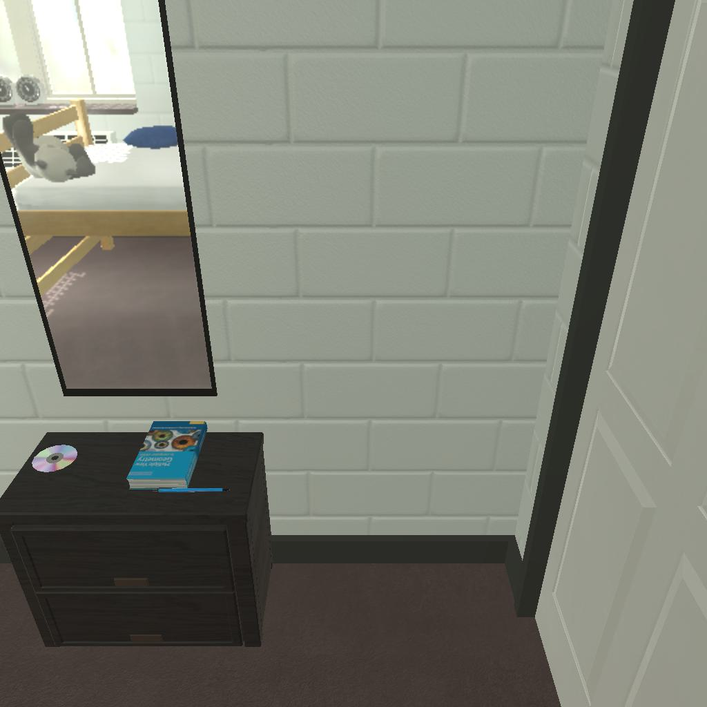

---------------------------------------------------------task: 8---------------------------------------------------------
--------------------------------------------------------------------------------------------------------------------------------------------------------------------
--------------------------------------------------------------------------------------------------------------------------------------------------------------------
Step:--------------------------------------------------------------------------3-------------------------------------------------------------------------------
----------------------------------------
VLM Prompt:
Image1:
Image2:
Image3:
**Instruction**
1. Analyze the provided images to identify all visible household objects and compare the difference between images (e.h. whether the object is opened or not and taken on hand or not), focusing on those relevant to the task description "put some laptop on desk."
2. Use the analysis of images and the task hint "The agent must find an object of the desired type, pick it up, find the correct location to place it, and put it down there." to answer the question: what is the most reasonable action in the choices for the task description "put some laptop on desk"?
3. Decide and write the answer using the template: The answer is: (i): , where i is the real number. If there is no desired object in images, search every place based on **Initial Observation** to find the object. And if no one is exactly correct, choose a similar answer.
**Initial Observation**
You are in the middle of a room. Looking quickly around you, you can see bed (1), garbagecan (1), desk (1), sidetable (1), drawer (1-5), laundryhamper (1)
**Answer Choices**
(1): go to bed 1
(2): go to garbagecan 1
(3): go to sidetable 1
(4): go to drawer 2
(5): go to laundryhamper 1
(6): go to drawer 3
(7): go to drawer 4
(8): go to drawer 5
(9): open drawer 1
(10): close drawer 1
(11): examine drawer 1
**Answer**
Let's think step by step by following the instructions.
----------------------------------------
----------------------------------------
Original Response:
First, let's analyze the provided images to identify all visible household objects:
Image1 shows a sidetable with a DVD case, a CD, and a book on it. There is also a mirror and a trash can visible.
Image2 shows a desk with a clock, two pens, and a smartphone on it.
Image3 shows a mirror reflecting a bed with a stuffed animal on it and the same sidetable as in Image1 with the same objects on it.
Comparing the differences between images, we do not observe any objects being opened, taken in hand, or relevant changes that affect the task at hand.
Based on the task description "put some laptop on desk," and considering the initial observation stating that there is a desk in the room, the most reasonable action would be to find a laptop and place it on the desk. However, none of the images show a laptop, nor do the answer choices provide an option to pick up a laptop. Therefore, we must search every place based on the Initial Observation to find the object.
The answer choices provided do not directly suggest where a laptop might be found, but a drawer is a reasonable place to search for a laptop in a household setting. Since we do not have any information on which drawer might contain a laptop, the best course of action would be to start with the first drawer and proceed methodically.
The answer is: (9): open drawer 1
----------------------------------------
----------------------------------------
>>> Refine Original VLM Response and Get Pure Action: open drawer 1
----------------------------------------
-----------------------------------------------------------------
Running time: 15.041825532913208 seconds
Total Money: 3.524380000000001
-----------------------------------------------------------------
-----------------------------------------------------------------
Text Observation:You open the drawer 1. The drawer 1 is open. In it, you see a book 1, a cd 1, and a pen 2.
-----------------------------------------------------------------
UNSUCCEED